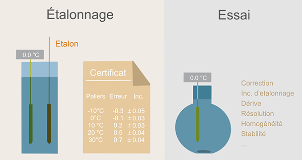

Cette présentation est une introduction à ce qu'est la métrologie
L'objectif étant d'avoir d'avoir des bases communes pour travailler ensemble
Métrologie = science de la mesure
Discipline qui comprend tous les aspects théoriques et pratiques des mesurages.
Elle rassemble l'ensemble des techniques et savoirs faire qui permettent de réaliser des mesures, de les interpréter et d'assurer leur fiabilité.
La science de la mesure est basée sur le raccordement au système international.
Pyramide de raccordement au système international par l'intermédiaire d'une chaîne ininterrompue et documentée d'étalonnages dont chacun contribue à l'incertitude de mesure
Tous les équipements de mesure doivent faire l'objet d'une traçabilité au Système International en étant intégrés au processus Fonction Métrologie du CSTB.
Etalonnage : c'est comparer l'indication de notre équipement avec celle d'un étalon. Il est réalisé avec maîtrise des incertitudes suivant une procédure et fait l'objet d'un certificat d'étalonnage.
On en déduit une relation pour corriger les indications de l'équipement.
Vérification : c'est comparer l'indication de notre équipement avec celle d'un étalon. Elle est réalisé avec maîtrise des incertitudes suivant une procédure et fait l'objet d'un constat de vérification.
On en déduit une conformité par rapport à une spécification.
Erreur : c'est l'écart entre l'indication de notre appareil et celle de l'étalon. On peut la corriger par une régression, mais il restera toujours un résidu (appelé erreur d'interpolation).
Incertitude : c'est quantifier le doute que l'on a dans une mesure. Pour cela, on utilise les informations à notre disposition (incertitude d'étalonnage, erreur, dérive, stabilité, répétabilité influence de la température ...). Si on n'a pas ou peu d'informations, l'incertitude peut être très grande.
Contrôle ou vérification intermédiaire : c'est contrôler avant et/ou après un essais que la réponse de l'équipement est comprise dans un tunnel d'acceptabilité.
On en déduit si l'équipement dérive ou s'il y a une anomalie sur la chaîne de mesure.
Plage de mesure
Type de sortie (A/N)
Performances métrologiques
Méthode de mesure
Configurer la sortie analogique (type et plage correspondante)
Unité de l'affichage
Méthode de mesure ou résolution souhaitée
Définir les consignes d'étalonnage
Permet de connaître les erreurs de l'équipement (pour correction ou pour évaluer l'incertitude)
Définir une périodicité d'étalonnage (12 à 36 mois)
Moyen interne de s'assurer avant ou après un essai que l'équipement ne dérive pas, dans une certaine mesure (à définir)
Périodiquement, le capteur est étalonné pour évaluer sa dérive et ajuster les corrections à appliquer
La périodicté peut être revue si l'équipement ne dérive pas
La procédure DT/AME décrit en détail le suivi des équipements de mesure au CSTB
Toutes les informations sur les équipements de mesure, sont accessibles par tous via la base fiche de vie.
Traçabilité du matériel de mesure
A la carte
+
Méthode standard, documentée
Maîtrise des facteurs influents
Suivant un référentiel
+
Etude interlaboratoires
Maîtrise des incertitudes de mesures
Audit externe (COFRAC)
Suivant l'ISO 17025
Il pilote la fonction métrologie au CSTB.
Réalise des raccordements métrologiques (étalonnages et vérification).
Défini les procédures, et assure la traçabilité au SI.
Accompagne les équipes et coordonne la sous-traitance (raccordement métrologique effectué par un prestataire ou sur site par une personne habilitée).
Il s'assure que les équipements sont opérationels et que leur raccordement métrologique est à jour.
Il évalue la capabilité et réalise ou s'assure que les contrôles en services sont réalisés et enregistrés.
Interlocuteur en charge d'un parc d'équipement.
Il est nécessaire qu'il soit utilisateur des équipements pour connaître leur fonctionnement et leurs besoins métrologiques.
Identifier tous les équipements et appareils de mesure utilisés.
Récupérer les informations utiles à leur fonctionnement (manuel utilisateur, factures, historique des maintenances et réparations ...)
Au CSTB, l'outil de gestion des équipements est Fiche de Vie, accessible par tous.
Enregistrer tous les équipements de mesure dans cette base avec les informations utiles à leur fonctionnement.
Identifier par type d'équipement et par utilisation les besoins en terme de traçabilité au SI.
Type de raccordement, plage et incertitude.
Documenter par des procédures et enregistrements toutes les preuves de traçabilité (raccordement, calibrages, contrôles ...)
Dans les activités du processus R3, l'intégration à la fonction métrologie est acquise.
Une phase d'optimisation est en cours, pour évaluer la capabilité des équipements et mettre à jour les calculs d'incertitudes.
Définir le niveau de maîtrise attendu (mesure, essai à la demande ou essai accrédité)
Identifier les équipements de mesure
Identifier la méthode de mesure
Planifier les raccordements métrologiques si besoin
Réaliser et enregistrer les contrôles et vérifications intermédiaires prévues
S'assurer que l'équipement est utilisé comme prévu (plage de fonctionnement, réglage, méthode)
Corriger les mesures à partir des données d'étalonnage
Evaluer les incertitudes de mesure
Prendre en considération tous les aspects théoriques et pratiques ainsi que leurs limites lors d'une mesure permet d'en assurer la validité
Faire étalonner les équipements de mesure permet de connaître leur biais et donc de maîtriser le doute (diminuer l'incertitude) autour de la mesure.
En identifiant avec le client le niveau de maîtrise attendu des résultats, on optimise les efforts à fournir et assure une traçabilité de l'affaire.